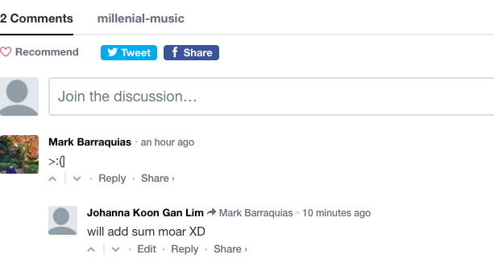

First of all, we learned more about coding in HTML, and it turns out that there are plenty of short cuts available so that we do not have to hard code everything. Creating a page had become simpler. Our speaker Brian said that if others will mostlikely use a process, there must be a library for it.
We also learned how to connect javascript and css files to HTML files. Lastly, we learned how to publish web pages in Github.
Because of the number of ideas gained in this workshop, this workshop can be very useful for our future courses.On the other hand, we were able to create a blog (thanks to the workshop as well). Creating the site was very fun. But, putting the components in the site was still quite a job.

We also added the Disqus code, adding a commenting feature on our blog pages. We are quite surprised that adding a commenting feature was not that hard. However, we are happy that it would not add to our academic burdens some more.